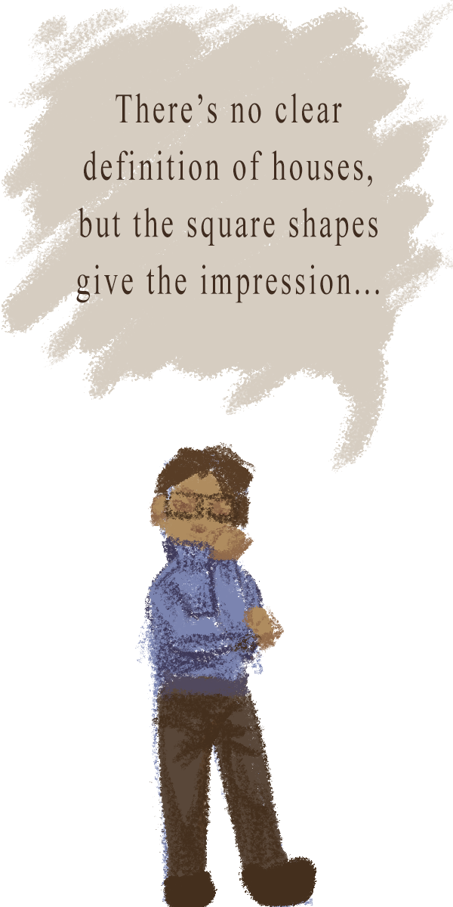
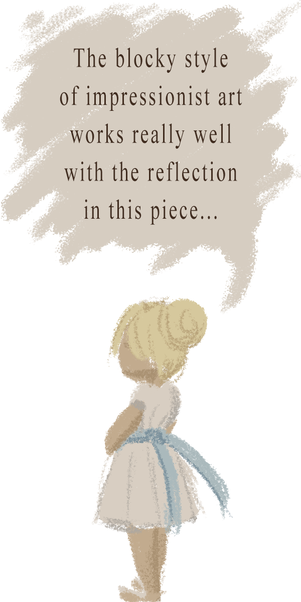
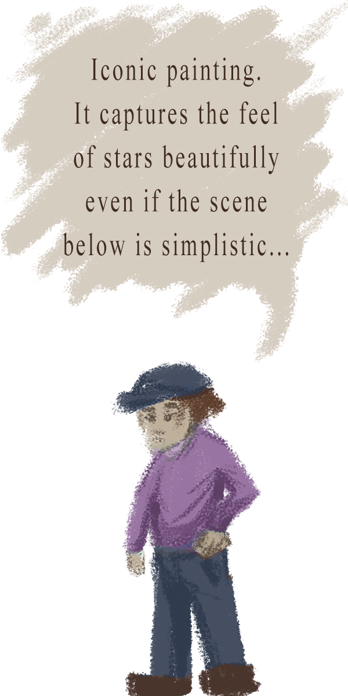
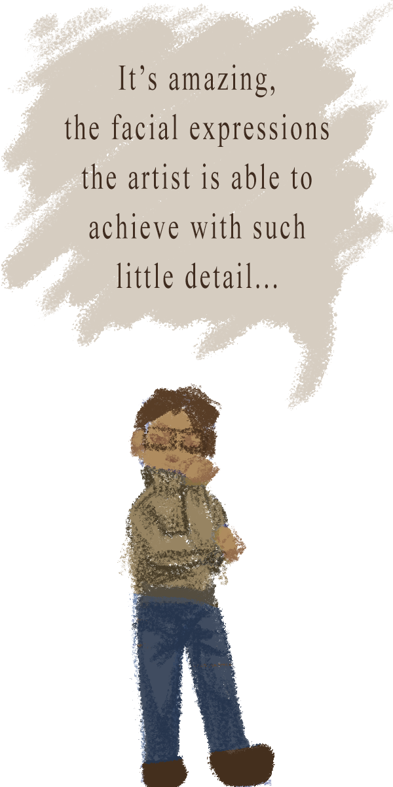
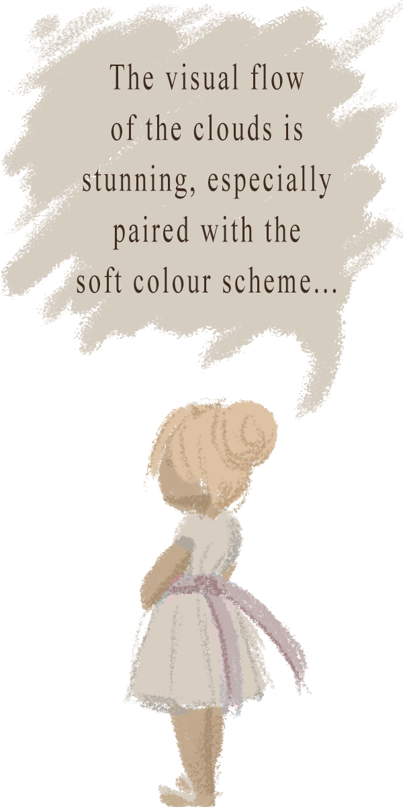

The course that inspired this website is Art History 1002: World Art Since 1400. I specifically chose to display the impressionism period in the 19th century, since I find it the most captivating and visually appealing. Impressionism focuses more on the feel of a scene rather than explicit details, which gives the paintings the feeling of a memory. Impressionist paintings come straight from the soul, and a really enjoyed learning about them in my Art History class, despite not being overly interested in history as a subject.